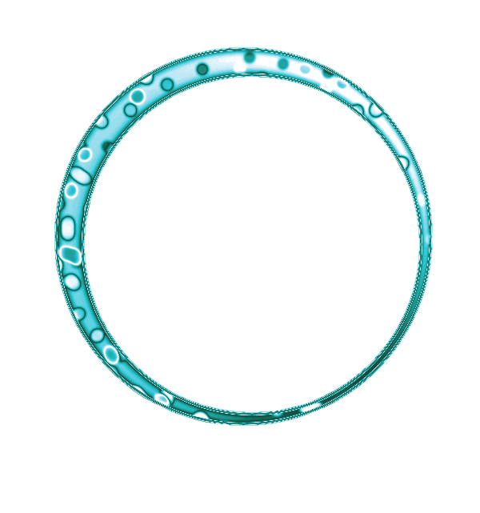

<!doctype html>
<html>
<head>
<meta charset="UTF-8">
<title>tunnel</title>

<style>
	.cercle{position: absolute;}
	#cadreTunnel{background-color: grey;}
</style>

<script type="text/javascript" src="jquery-1.11.1.min.js"></script>
<script src='scrollReveal/dist/scrollReveal.min.js'></script>
<script type="text/javascript">


$(function() {

	

	var nbCercle = 5;

	var diffTaille = 300;

	var HauteurEcr = $(window).height();
	var LargeurEcr = $(window).width();

	var MilieuEcrHaut = HauteurEcr * 0.5;
	var MilieuEcrLarg = LargeurEcr * 0.5;

	for(i=0; i<nbCercle; i++){ // création des cercles et de leurs tailles différentes

		$("#cadreTunnel").append("");
		
	}

	centrerCercles();

	var j=0;// pour évolution du grossissement pour chaque cercle (de + en + rapide)

	var k=0;// pour gérer les nouveaux id des nouveaux cercles dans la boucle

	var plop=0;


	var tabImg=["cercle1.png", "cercle2.png", "cercle3.png", "cercle4.png"];

	var tabDiMarco=["oeuvre1.jpg", "oeuvre2.jpg", "oeuvre3.jpg"];


	$("body").click(function(){

		var randImg = tabImg[Math.floor(Math.random()*tabImg.length)];

		var DiMarco = tabDiMarco[0];

		// On créé un nouveau cercle de la taille minimale, et on lui donne un id supérieur au précédent


		$("#cadreTunnel").append("");

		$("#cadreTunnel").append("");


		k++; // on incrémente pour que la boucle contienne les nouveaux id à chaque clic

		//centrerCercles();


			var LargeurCercle = $("#cercleIndividuel"+(nbCercle-2)).width();
			var HauteurCercle = $("#cercleIndividuel"+(nbCercle-2)).height();

			var CentreLargeur = (MilieuEcrLarg) - (LargeurCercle / 2) + $(window).scrollLeft();
			var CentreHauteur = (MilieuEcrHaut) - (HauteurCercle / 2) + $(window).scrollTop();

			$("#cercleIndividuel"+(nbCercle-2)).animate({ left: CentreLargeur, top: CentreHauteur}, 1000 ); // centrer le cercle créé

			$("#cercleIndividuel"+(nbCercle-1)).animate({ left: CentreLargeur, top: CentreHauteur}, 1000 ); // centrer l'oeuvre

			$("#cercleIndividuel"+(nbCercle-3)).animate({ opacity: 0.3 }, 1000);


		 
   		for(i=0; i<(nbCercle+k); i++){

   			var LargeurCercle = $("#cercleIndividuel"+i).width();

   			$("#cercleIndividuel"+i).animate({width: "+="+1500/(i)+"px", left: "-="+750/(i)+"px", top: "-="+750/(i)+"px"}, 1000, function(){});

   			//$("#cercleIndividuel"+i).attr("id", ("#cercleIndividuel"+(i+1));    Augmenter l'id de 1 à chaque fois pour permettre un cycle
   		}

   		j++; // on incrémente, donc la prochaine fois qu'on clique, chaque cercle grandira "j" fois plus vite

   	});

   	function centrerCercles(){

 		for(i=0; i<nbCercle; i++){

			var LargeurCercle = $("#cercleIndividuel"+i).width();
			var HauteurCercle = $("#cercleIndividuel"+i).height();

			var CentreLargeur = (MilieuEcrLarg) - (LargeurCercle / 2) + $(window).scrollLeft();
			var CentreHauteur = (MilieuEcrHaut) - (HauteurCercle / 2) + $(window).scrollTop();

			$("#cercleIndividuel"+i).animate({ left: CentreLargeur, top: CentreHauteur}, 1000 );

   		}

   	};

});

</script>


</head>

<body>

	<div  id="cadreTunnel"></div>


</body>


</html>
